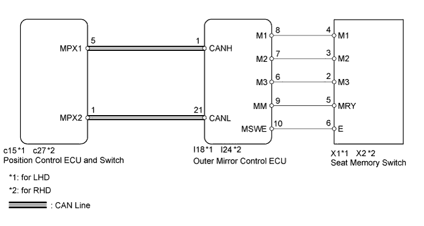
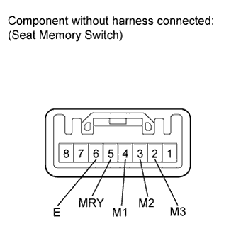
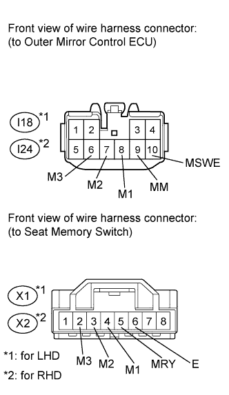

FRONT POWER SEAT CONTROL SYSTEM (w/ Seat Position Memory System) > Power Seat Position is not Memorized |

| 1.CHECK FRONT POWER SEAT CONTROL FUNCTION |
Check that each function of the power seat operates normally by using the front power seat switches.
|
| ||||
| OK | |
| 2.CHECK SEAT MEMORY SWITCH FUNCTION |
Perform a memory operation properly. Check that the buzzer sounds to indicate the completion of the memory operation.
|
| ||||
| OK | ||
| ||
| 3.CHECK COMBINATION METER FUNCTION |
When the engine switch is on (IG) and the shift lever is in P, check that the combination meter shows that the shift lever is in P.
|
| ||||
| OK | |
| 4.READ VALUE USING INTELLIGENT TESTER (SEAT MEMORY SWITCH) |
Check the Data List for proper functioning of the seat memory switch.
| Tester Display | Measurement Item/Range | Normal Condition | Diagnostic Note |
| SET Switch | Seat memory SET switch signal / ON or OFF | ON: Seat memory SET switch on OFF: Seat memory SET switch off | - |
| M1 Switch | Seat memory switch 1 signal / ON or OFF | ON: Seat memory switch 1 on OFF: Seat memory switch 1 off | - |
| M2 Switch | Seat memory switch 2 signal / ON or OFF | ON: Seat memory switch 2 on OFF: Seat memory switch 2 off | - |
| M3 Switch | Seat memory switch 3 signal / ON or OFF | ON: Seat memory switch 3 on OFF: Seat memory switch 3 off | - |
|
| ||||
| OK | ||
| ||
| 5.INSPECT SEAT MEMORY SWITCH |
 |
Remove the seat memory switch (Click here).
Measure the resistance according to the value(s) in the table below.
| Tester Connection | Switch Condition | Specified Condition |
| 4 (M1) - 6 (E) | Seat memory switch 1 pressed | Below 1 Ω |
| 3 (M2) - 6 (E) | Seat memory switch 2 pressed | Below 1 Ω |
| 2 (M3) - 6 (E) | Seat memory switch 3 pressed | Below 1 Ω |
| 5 (MRY) - 6 (E) | Seat memory SET switch pressed | Below 1 Ω |
|
| ||||
| OK | |
| 6.CHECK HARNESS AND CONNECTOR (OUTER MIRROR CONTROL ECU - SEAT MEMORY SWITCH) |
 |
Disconnect the I18*1 or I24*2 ECU connector.
Disconnect the X1*1 or X2*2 switch connector.
Measure the resistance according to the value(s) in the table below.
| Tester Connection | Condition | Specified Condition |
| I18-8 (M1) - X1-4 (M1) | Always | Below 1 Ω |
| I18-7 (M2) - X1-3 (M2) | Always | Below 1 Ω |
| I18-6 (M3) - X1-2 (M3) | Always | Below 1 Ω |
| I18-9 (MM) - X1-5 (MRY) | Always | Below 1 Ω |
| I18-10 (MSWE) - X1-6 (E) | Always | Below 1 Ω |
| I18-8 (M1) - Body ground | Always | 10 kΩ or higher |
| I18-7 (M2) - Body ground | Always | 10 kΩ or higher |
| I18-6 (M3) - Body ground | Always | 10 kΩ or higher |
| I18-9 (MM) - Body ground | Always | 10 kΩ or higher |
| I18-10 (MSWE) - Body ground | Always | 10 kΩ or higher |
| Tester Connection | Condition | Specified Condition |
| I24-8 (M1) - X2-4 (M1) | Always | Below 1 Ω |
| I24-7 (M2) - X2-3 (M2) | Always | Below 1 Ω |
| I24-6 (M3) - X2-2 (M3) | Always | Below 1 Ω |
| I24-9 (MM) - X2-5 (MRY) | Always | Below 1 Ω |
| I24-10 (MSWE) - X2-6 (E) | Always | Below 1 Ω |
| I24-8 (M1) - Body ground | Always | 10 kΩ or higher |
| I24-7 (M2) - Body ground | Always | 10 kΩ or higher |
| I24-6 (M3) - Body ground | Always | 10 kΩ or higher |
| I24-9 (MM) - Body ground | Always | 10 kΩ or higher |
| I24-10 (MSWE) - Body ground | Always | 10 kΩ or higher |
|
| ||||
| OK | |
| 7.CHECK OUTER MIRROR CONTROL ECU (OPERATION) |
After replacing the outer mirror control ECU, check that the front power seat control functions operate normally using the front seat switches and seat memory switch.
|
| ||||
| OK | ||
| ||